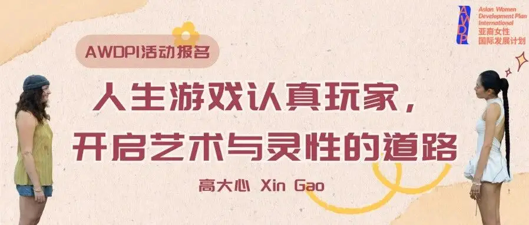
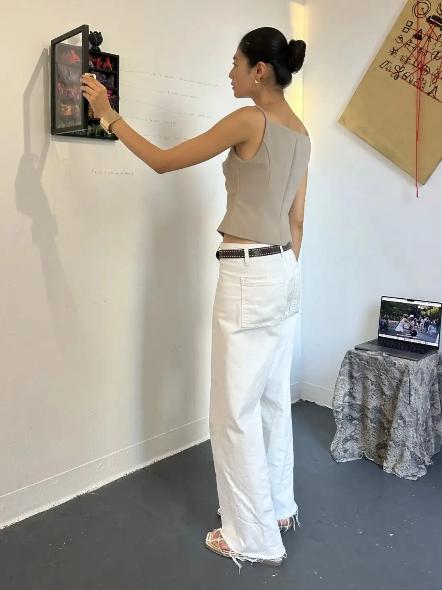
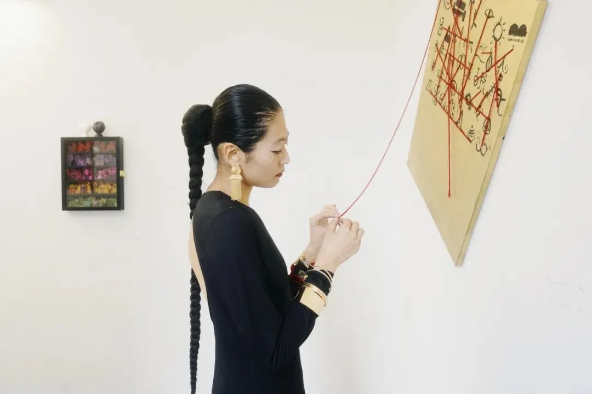
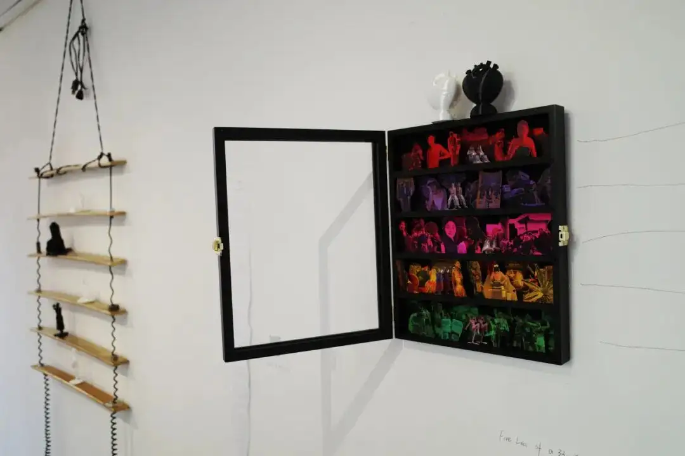
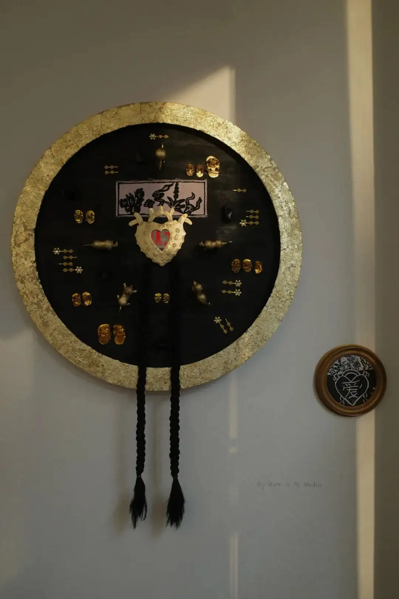
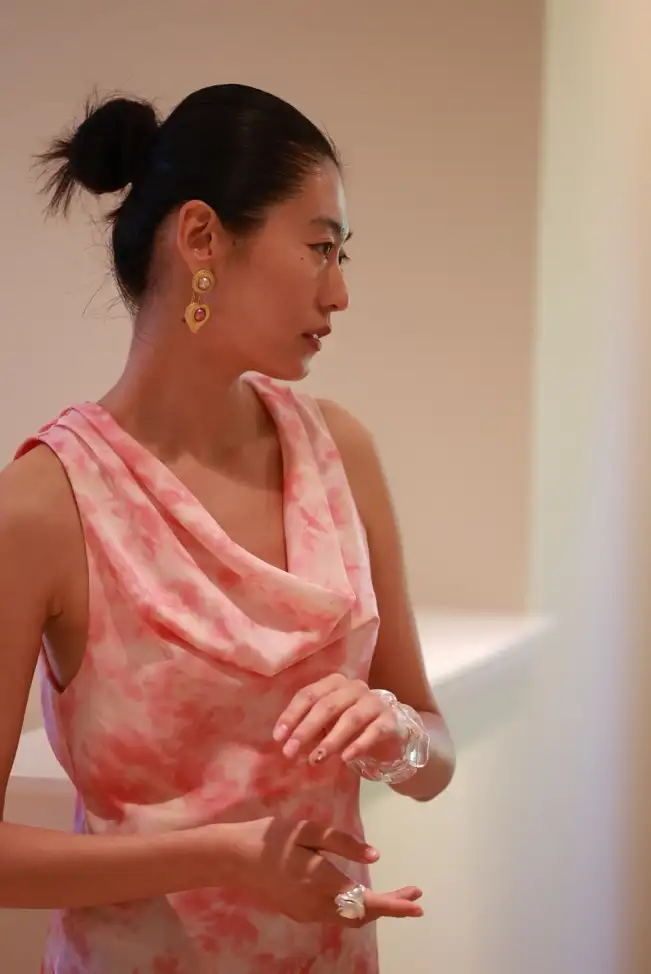
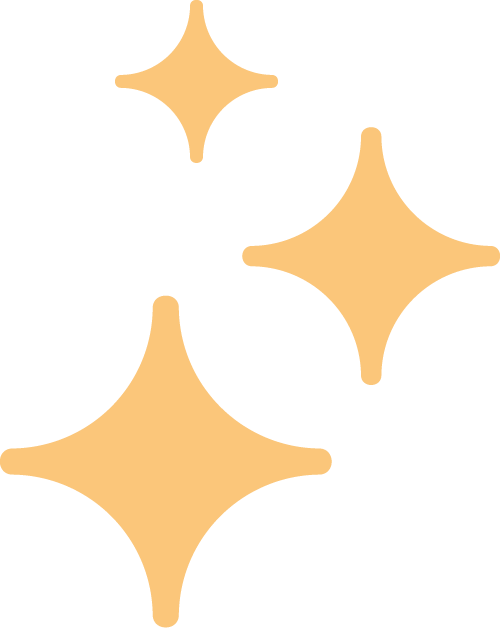
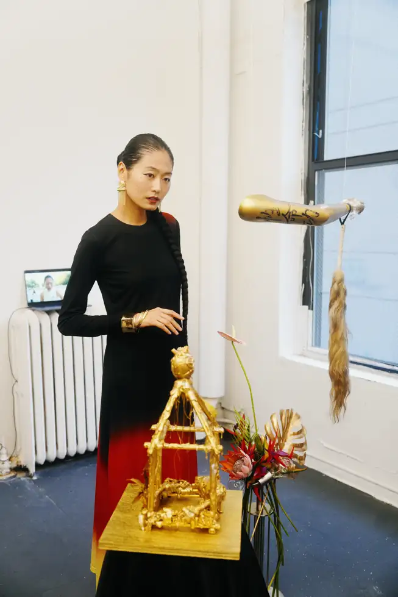
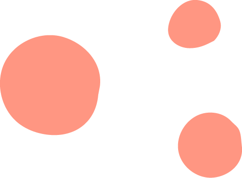
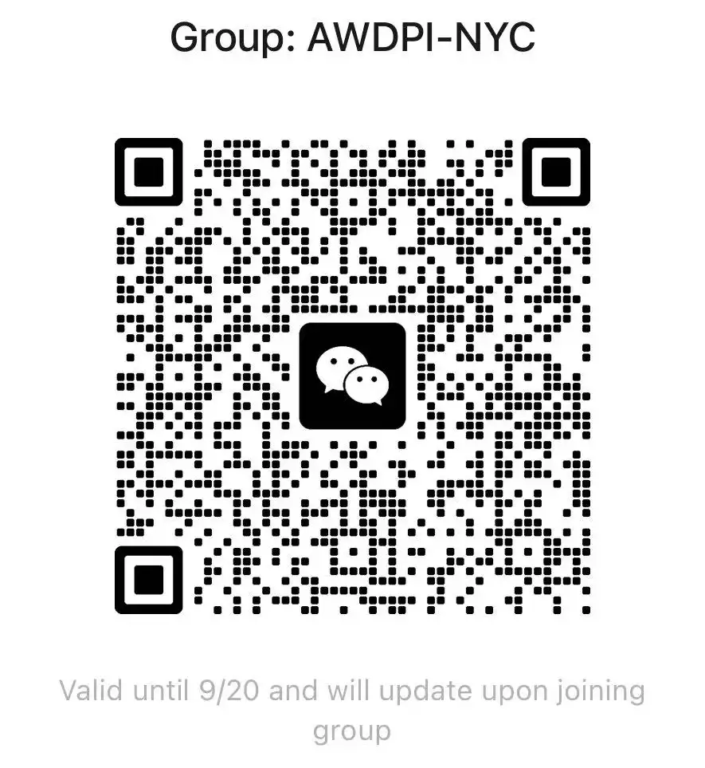

在不同的人生阶段，我们常常会经历这样的时刻：坐在地铁上迟疑着，要不要离开一份安稳却不再热爱的工作；在写下辞职信前犹豫着，自己是否真的有勇气去尝试新的角色；在家庭和自我之间拉扯着，到底该回应外界的期待，还是跟随内心的声音。这些问题没有唯一答案，但它们塑造了我们不同的阶段，也推动着我们不断成长。
AWDPI 想为在纽约的大家创造一个特别的下午。这是一个从忙碌中停下来的机会，也是一个借由艺术与分享去思考“选择”的空间。
我们邀请到 艺术家 & 策展人 高大心（Xin Gao）。她的作品里有曼陀罗的圆与秩序，也有心脏与火的象征力量。它们既是视觉与仪式的结合，也是大心个人关于疗愈与成长的表达。这一次，她会和我们分享自己如何在不同身份与角色之间切换，以及这些经历如何在作品中汇聚成关于女性、关于人生的叙事。




或许在她的故事里，你能看到 自己曾有过的犹豫与思考，也能找到一些面对未来的勇气与启发。

时间：
2025 年 9 月 20 日（周六）下午 1:00 – 3:00 EST
线下地点：
265 Lorimer Street, Brooklyn, NY 11206, 8th Floor Lounge
报名链接：
线下活动
扫码报名参加线下活动
线上参与
Zoom会议链接（密码：796259）：
https://nyu.zoom.us/j/98954474187
Meeting ID:
989 5447 4187



高大心 Xin Gao
女性艺术家｜策展人｜灵性导师｜“人生的游戏玩家”
2025 纽约视觉艺术学院 驻地艺术家
2024 泰国清迈 发起「心脏所画廊」
2022 艺术策划项目获 EMA 亚太区金奖
2021 入选 G20 YEA 青年企业家联盟
作品展出足迹：纽约 · 墨西哥城 · 清迈 · 上海 · 广州 · 西安
她曾在路易威登中国区公关部任职，也在英国文化教育协会 & 美国密苏里大学担任文化教员，并与玛莎拉蒂、大众、支付宝等品牌合作。她的作品跨越艺术、商业与灵性，不断探索女性如何在不同阶段重塑自我。
《一个33岁女人的5种选择》
以五个虚构又真实的角色，呈现女性在迁徙、家庭、职业、母性与自由之间的抉择与挣扎，折射出现代女性在不同阶段的蜕变与成长。
作品的延续与深化
从全球流动的《The World is My Mandala》到承载“火”意象的陶瓷心脏系列，她不断用艺术探索“如何在转变中找到新的自己”。
跨界与灵性的启发
从奢侈品牌公关到独立艺术家，她如何跨越角色，结合灵性实践，让女性的成长故事被更多人看见。

这不只是一场艺术分享，你可以在这里：
从忙碌中抽身，
给自己留一个安静的下午；
听见一位女性艺术家
如何面对选择与蜕变；
在她的故事里，找到与自己共鸣的瞬间；
带走一些面对未来的勇气与新的可能性。

女性的人生，没有唯一的答案。每一次选择，都是成长；每一次蜕变，都是新的开始。
9 月 20 日，无论你是在布鲁克林的线下空间，还是在 Zoom 的线上相遇，AWDPI 邀请你加入这场分享。
或许在高大心的故事里，你会想起自己，也会看到更多可能。
最后，如果你对本次活动感兴趣，欢迎扫码加入活动群，我们会在群里发布最新的活动信息和更多相关内容。
扫码加入NYC活动总群

若二维码过期可在公众号后台留言或添加小助手: Avoice-WomenAid加入群聊
撰稿｜刘欣桐
排版&封面｜池一诺